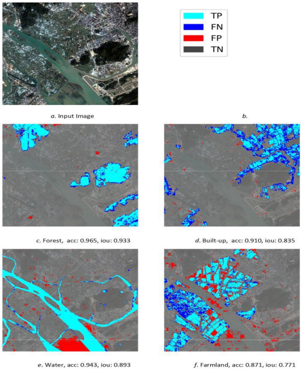

Anis Sarker
Portrait of Anis Sarker
I am a machine learning engineer and applied AI researcher with hands-on experience building end-to-end
systems across computer vision, deep learning, and geospatial intelligence.
My work spans a range of real-world projects, including virtual try-on systems for fashion and cosmetics,
AI-driven ERP assistants.
Priorly, I worked as a research assistant at the Center for Computational and Data Sciences lab, focusing on GeoAI projects land use/land cover , and building categorization .
You can find a copy of my CV here
Email: anissarker603@gmail.com
Research interests: Machine Learning, Deep Learning, Computer Vision, GIS, and Remote Sensing
B.Sc. in Computer Science
Independent University, Bangladesh
Graduated: 2019
Thesis: Land Use and Land Cover Segmentation Using Deep Neural Network
Thesis Report
BD Open LULC Map
BD Open LULC Map: High-resolution land use land cover mapping & benchmarking for urban development in Dhaka,
Bangladesh
M.S. Hossain, R.H. Rajib, M.A.K. Iftee, O. Paul, A.B.S. Nayem, A. Sarker ,
M.A. Amin, A.A. Ali and A.K.M.M.
Rahman
IEEE International Conference on Image Processing, 2025
Classify Urban Cities of the Developing World
Applying State-of-the-Art Deep-Learning Methods to Classify Urban Cities of the Developing World
A.K.M.M. Rahman, M. Zaber, Q. Cheng, A.B.S. Nayem, A. Sarker , O. Paul, R.
Shibasaki
Sensors, 2021
Novel Disaster Image Dataset
A Novel Disaster Image Dataset and Characteristics Analysis using Attention Model
F.F. Niloy; Arif; A.B.S. Nayem; A. Sarker , O. Paul; M.A. Amin, A.A. Ali, M.I.
Zaber, and A.K.M.M. Rahman
25th International Conference on Pattern Recognition (ICPR), 2020
Deep-learning Coupled
Deep-learning Coupled with Novel Classification Method to Classify the Urban Environment of the Developing
World
Q. Cheng, A.K.M.M. Rahman, A. Sarker , A.B.S. Nayem, O. Paul, A.A. Ali, MA.
Amin, R. Shibasaki, M. Zaber
SIGML, 2020

LULC Segmentation
LULC Segmentation of RGB Satellite Image Using FCN-8
A.B.S. Nayem, A. Sarker , O. Paul, A.A. Ali, M.A. Amin, and A.K.M.M. Rahman
SLAAI, 2020
Copyright © 2019-2025 Anis Sarker.